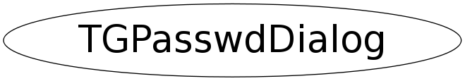

class TGPasswdDialog
TGPasswdDialog Graphic dialog to enter passwords Usage: { Buffer for the passwd char pwdbuf[128] Open the dialog box TGPasswdDialog dialog("My prompt", pwdbuf, 128); Wait until the user is done while (gROOT->IsInterrupted()) gSystem->DispatchOneEvent(kFALSE); Password is now in pwdbuf }
Function Members (Methods)
public:
| TGPasswdDialog(const TGPasswdDialog&) | |
| TGPasswdDialog(const char* prompt, char* pwdbuf, Int_t pwdlenmax, UInt_t w = 400, UInt_t h = 400) | |
| virtual | ~TGPasswdDialog() |
| static TClass* | Class() |
| void | CloseWindow() |
| void | DoClose() |
| virtual TClass* | IsA() const |
| TGPasswdDialog& | operator=(const TGPasswdDialog&) |
| void | ReturnPressed() |
| virtual void | ShowMembers(TMemberInspector& insp) |
| virtual void | Streamer(TBuffer& b) |
| void | StreamerNVirtual(TBuffer& b) |
Data Members
private:
| TGTransientFrame* | fDialog | main frame of this widget |
| TGTextButton* | fOk | Ok button |
| TGTextEntry* | fPasswd | Password TextEntry |
| TGTextBuffer* | fPasswdText | Passwd Buffer |
| char* | fPwdBuf | buffer where to store the passwd |
| Int_t | fPwdLenMax | passwd buffer length |
Class Charts
{kind=link}
{kind=link}
{kind=link}
{kind=link}

Function documentation
TGPasswdDialog(const char* prompt, char* pwdbuf, Int_t pwdlenmax, UInt_t w = 400, UInt_t h = 400)
Create an editor in a dialog.
TGPasswdDialog(const char* prompt, char* pwdbuf, Int_t pwdlenmax, UInt_t w = 400, UInt_t h = 400)